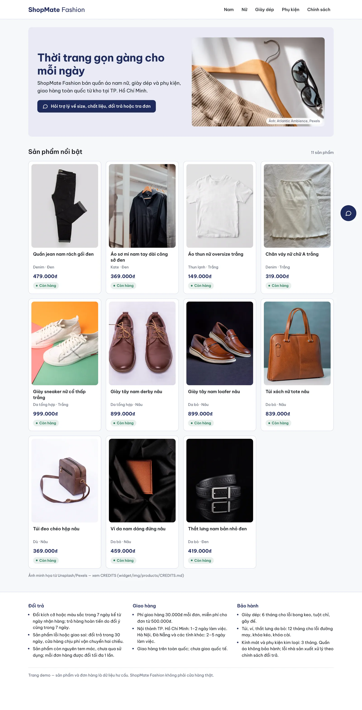
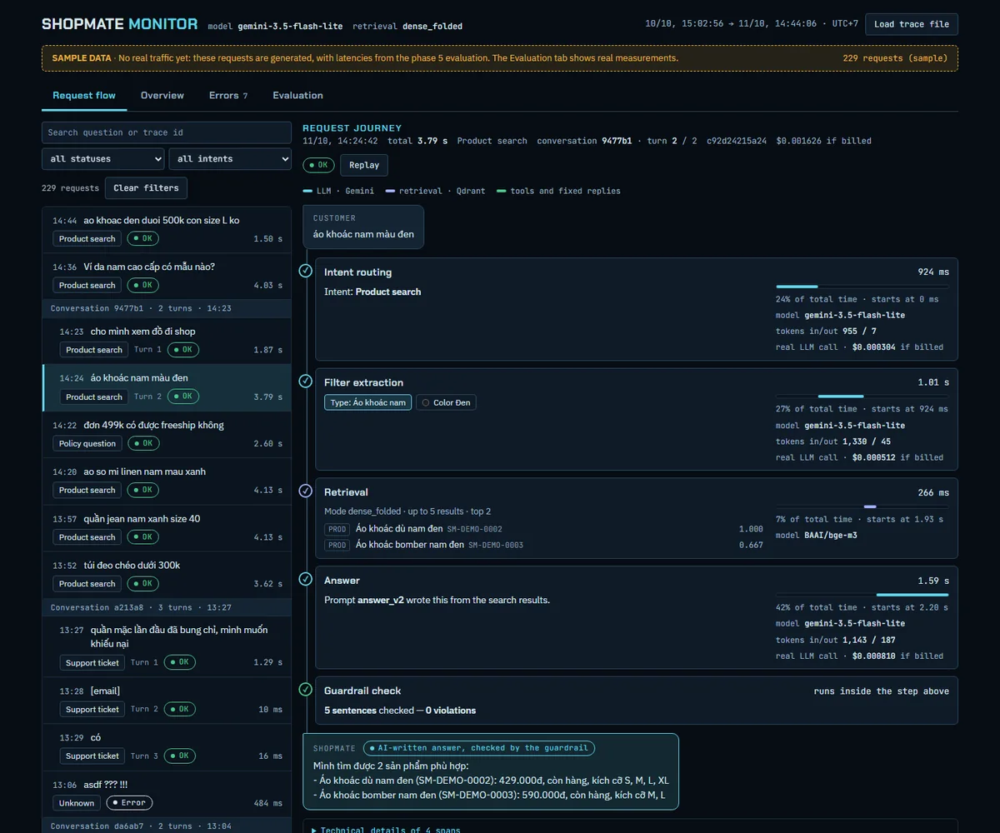
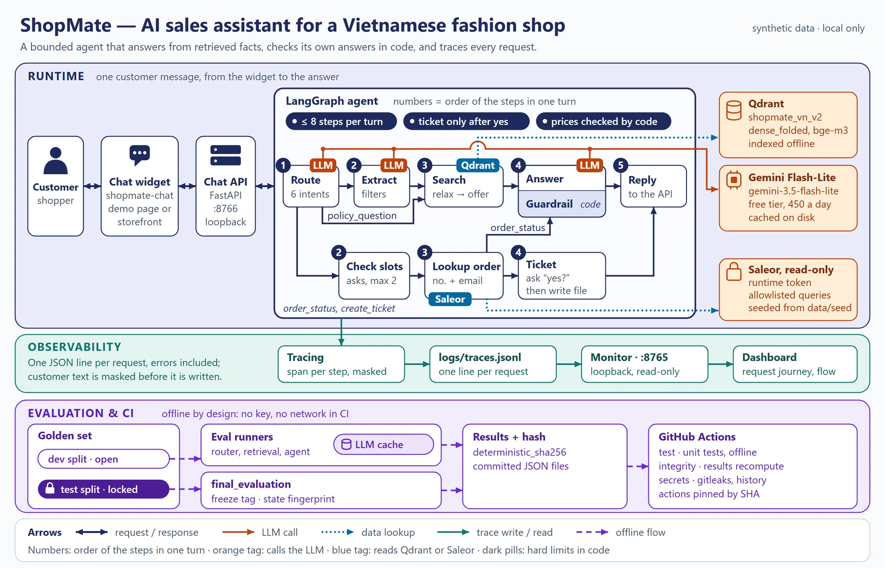

ShopMate — AI sales assistant for an online fashion store
Personal project, 2026- Python
- LangGraph
- Qdrant
- Gemini
- Guardrails
- bge-m3
- Saleor GraphQL
- FastAPI
- GitHub Actions
- Web Components
- An agent that answers product, return-policy and order-status questions over a Saleor store with 250 products. Read-only tools, at most 8 steps, and support tickets only after the customer confirms.
- Hybrid search for Vietnamese typed without accents: fusing an accent-folded keyword index with bge-m3 vectors raised MRR by +0.43 (95% CI 0.27–0.58) over the baseline.
- A guardrail in code, not in the prompt: any sentence that quotes a price must match the SKU it names, or the answer is replaced.
- Evaluated like an experiment: 104-question golden set, dev/test split, test locked by hash and pre-registered before its single run. CI runs 1,600+ offline tests, result-integrity checks and secret scanning.
- An embeddable chat widget, and an operator monitor that shows every request from question to reply.
Dev set vs. locked test
Dev (71 questions)Test (33, run once)
Correct answers70/7131/33
Intent routing71/7133/33
Retrieval MRR1.001.00
Filter extraction23/246/10
2.6 smedian latency, test
$0.91per 1,000 chats, test
Small samples, so intervals are wide; the full report has confidence intervals.
What the test taught me. Filter extraction dropped from 23/24 to 6/10: the prompt fit the dev questions too closely. Both wrong answers came from the guardrail firing on a correct reply, so a stricter guardrail is not free. Next: a second golden set and a looser price check.




